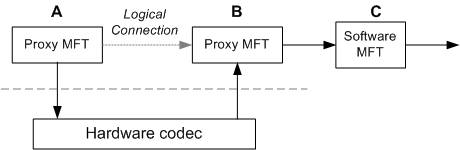

[!Note]
This topic applies to Windows 7 or later.
Â
This topic describes how to write a Media Foundation transform (MFT) that acts as a proxy to a hardware encoder, decoder, or digital signal processor (DSP).
[!IMPORTANT] If a hardware codec uses the AVStream multimedia class driver, it does not require a custom MFT. Media Foundation provides an AVStream proxy for this purpose. The information in this topic applies only in the special case where the hardware codec does not use AVStream. For more information, see Hardware Codec Support in AVStream.
Â
This topic contains the following sections:
Any hardware codec that is not based on AVStream must provide its own MFT to act as a proxy to the driver. A hardware codec might incorporate several distinct functional blocks:
Each of these functions should be managed by a separate MFT. A hardware MFT should never act as a multi-purpose "transcoder." Instead, put encoding functions into an encoder MFT and decoding functions into a decoder MFT. If the hardware offers frame scaling and format conversions, place those functions in a separate video processor, registered in the MFT_CATEGORY_VIDEO_PROCESSOR category. If the hardware does not support frame scaling or format conversion, Media Foundation provides a software video processor.
Hardware MFTs have the following general requirements:
A hardware MFT must implement following methods related to attributes:
When the MFT is first created, it must set the following attributes on its own global attribute store (that is, the attribute store returned by GetAttributes):
| Attribute | Description |
|---|---|
| MF_TRANSFORM_ASYNC | Must be set to TRUE. Indicates that the MFT performs asynchronous processing. |
| MFT_ENUM_HARDWARE_URL_Attribute | Contains the symbolic link for the hardware device. The topology loader uses the presence of this attribute to test whether an MFT represents a hardware device. |
| MFT_SUPPORT_DYNAMIC_FORMAT_CHANGE | Must be set to TRUE. Indicates that the MFT supports dynamic format changes. |
Â
If two MFTs represent the same physical device, they can exchange data within the hardware—for example, over a hardware bus. There is no need to copy the data into system memory and then back to the device.
In the following diagram, the MFTs labeled "A" and "B" represent functional blocks within the same hardware. For example, in a transcoding scenario, "A" might represent a hardware decoder and "B" might represent a hardware encoder. The data flow between "A" and "B" occurs within the hardware. The MFT labeled "C" is a software MFT. Data flow from "B" to "C" uses system memory.

To establish a hardware connection, the two hardware MFTs must use a private communication channel. This connection is established during format negotiation, before the media types are set and before the first call to ProcessInput. The connection process works as follows:
The topology loader checks both MFTs for the presence of the MFT_ENUM_HARDWARE_URL_Attribute attribute. Note that it does not examine the value of this attribute.
If MFT_ENUM_HARDWARE_URL_Attribute is present on both MFTs, the topology loader does the following:
At this point, the downstream MFT has a pointer to the upstream MFT's attribute store, as shown in the following diagram.
[!Note]
For clarity, this diagram shows the streams and the attribute stores as distinct objects, but that is not required for the implementation.
Â
The downstream MFT uses the IMFAttributes pointer to establish a private communication channel with the upstream MFT. Because the channel is private, the exact mechanism is defined by the implementation. For example, the MFT might query for a private COM interface.
During step 4, the downstream MFT must verify whether the two MFTs share the same physical device. If not, they must fall back to using system memory for data transport. This enables the MFT to operate correctly with software MFTs and other hardware devices.
If the handshake succeeds and the two MFTs share a private data channel, they do not use the standard data processing model (described in the next section) at the connection point. Specifically, the downstream MFT does not send METransformNeedInput events; for more details, refer to the next section in this topic.
When a hardware MFT uses system memory for data transport, the process works as follows:
For details, refer to Asynchronous MFTs.
If the MFT uses a hardware channel, however, it does not send these events at the hardware connection point, because all data transfer happens internally within the hardware. Therefore, the pipeline does not call ProcessInput or ProcessOutput at the connection point.
For example, consider the first diagram in this topic. Given this configuration, data processing would occur as follows:
If a decoder and encoder are located on the same hardware chip, it may be preferable to use them together when transcoding. That is, selecting one should cause the other to be selected in the transcoding pipeline. To ensure that matching hardware codecs are chosen, both codec MFTs should offer a custom media type. To create a custom media type:
Other type attributes are optional. The decoder returns the custom type from its IMFTransform::GetOutputAvailableType, and the encoder returns the custom type from its IMFTransform::GetInputAvailableType method. In both cases, the custom type must be the first entry in the list (dwTypeIndex = 0).
To work with software codecs, the codec should also return at least one standard format, such as NV12 for video. Standard formats should appear after the custom type (dwTypeIndex > 0). If the two codecs must always be paired and cannot interoperate with software codecs, the MFTs should return only the custom format and not return any standard formats.
[!Note]
If a decoder does not return any standard formats, it cannot be used for playback with the Enhanced Video Renderer. In that case, it should be registered as a transcode-only decoder. See Transcode-Only Decoders.
Â
Â
Â